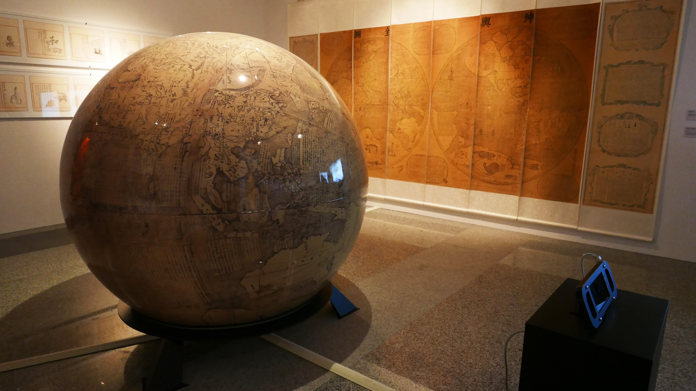
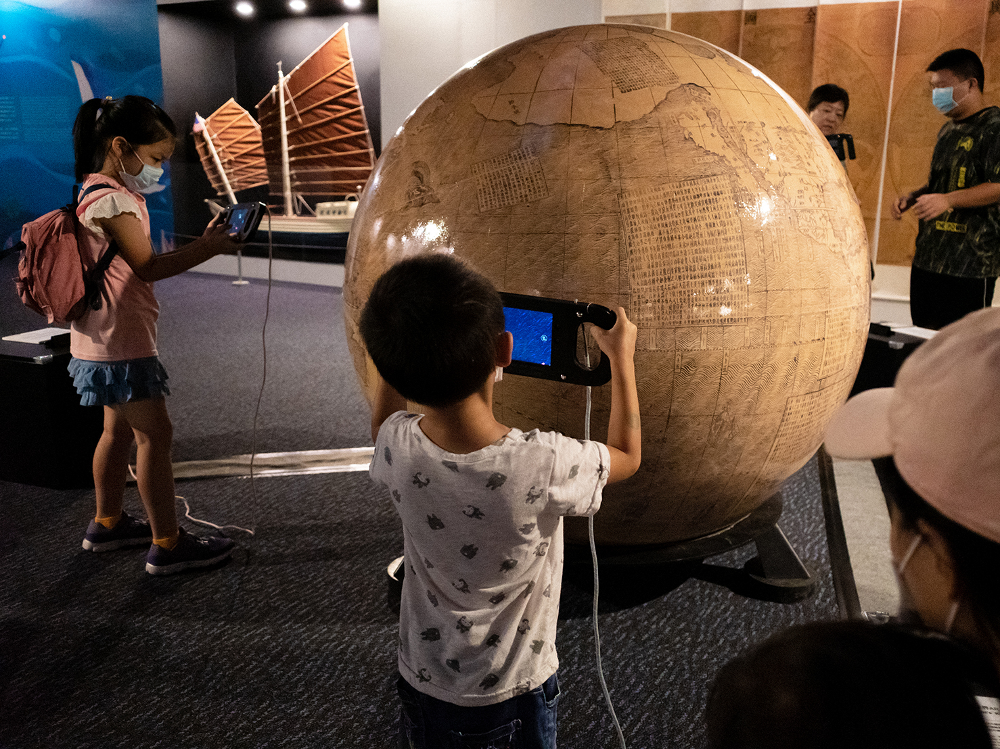

Advancements to the cartography toolbox and geographic measuring tools, such as map projections and celestial theory, led to the production of a large volume of maps in Europe from the 15th to 17th centuries, contributing to the Age of Discovery. The unprecedented understanding of the earth inspired even more exploration of unknown seas in search of legendary lands. At virtually the same time on the opposite end of the earth, at the height of its powers the Ming Dynasty sent explorers into the west seas (at the time, this referred to Southeast Asia and the Indian Sea), including seven missions led by the admiral Zheng He. In both the east and the west, people were leaving their nation of origin for the sake of trade, resource acquisition, and politics. As they sailed out to the open seas, they inspired scientific and technological advancements while spreading their cultures.
When Ferdinand Verbiest created the "Universal Map of the World (Kunyu Quantu)" (1674) for the Qing Dynasty’s Kangxi Emperor, he sought to aid knowledge flow between the east and west while supporting diplomacy. This map serves as the foundation of the "Ferdinand Verbiest’s Kunyu Worldview" new media art installation, which is shown in conjunction with Verbiest’s "Illustrated Explanation of the World." Animal pictures from the latter artifact are displayed beside animal specimens from the NMMST. Using AR, visitors see imaginative 17th century drawings placed next to actual specimens for comparison. Maps inspire people to want to explore foreign lands, a feeling that was likewise felt during the Qing Dynasty. In the 19th century, Tongan ships that sailed the southeast seas played a critical role in discovery. In this display, as you see the exterior structure of Tongan ships and learn about their historic background, consider how these Chinese-style sailboats were popular among the military, pirates, and merchants alike. They played an important role in the maritime history of both China and Taiwan.
Widely used by civilians, government, and pirates alike, the Tong-an ships were sea vessels that emerged during the mid-Qing Dynasty. They eventually became the most important force in the Qing Navy. Prior to the arrival of steamships, these ships are representative of traditional Chinese sailboats. The two important pictorial records, "Diagram of the Tong-an Ship Ji" and "Diagram of Tong-an Ship No. 1," show the biggest and most heavily armed class 1 and class 2 warship models from the Tong-an ship family. The highly detailed and colored drawings of the two Tong-an ships and the corresponding official memoranda attached serve as important evidence awaiting further exploration by Taiwanese and naval historians. The NPM invited senior ship model craftsman Mr. Zeng Shuming to help build the Tong-an ship model.


Ferdinand Verbiest’s Kunyu Worldview New Media Art Installation
Ferdinand Verbiest’s Kunyu Worldview New Media Art Installation utilizes modern augmented reality technology to reconstruct the 17th century worldview and enables the habitats of ancient creatures to reappear before us in the form of new media art. Visitors are able to use mobile devices to scan the globe before them and find out which animal will appear on the screen. Observe how these early depictions of familiar species are different from our present understanding. Pick up your mobile device and start globe-trotting in search of rare beasts!
【Origin of the concept】
Kunyu Quantu -Great Universal Map
Ferdinand Verbiest , Qing Dynasty
171 x 52 cm (A total of 8)
Kunyu Quantu, completed in 1674 by the Jesuit missionary Ferdinand Verbiest, was used as an explanatory apparatus to impart the geophysical worldview of the west to the Emperor Kangxi. Comprised of eight long scrolls and the only existing illustration of the eastern and western hemispheres in the history of Chinese geography, the map introduces western geographical and astronomical theories during the 16th and 17th centuries, such as the spherical earth theory, atmospheric sciences, as well as theories of tides and earthquakes. The map also shows European sailing vessels and several depictions of rare and spectacular terrestrial and marine creatures, for example giraffes, chameleons, beavers, whales, etc., successfully fulfilling the curiosity of contemporaries.
from the Wenyuange Edition of the Complete Library in Four Sections (Siku Quanshu)
Kangxi period (1674)
Ferdinand Verbiest made The Illustrated Explanation of the World to help explain the Kunyu Quantu. The first half contains information about geography and people while the second half introduces the countries, natural features, customs, and products of various countries. It looks at five continents and ends with seven magnificent illustrations of objects from the west. Included in the second half are 23 illustrations of animals with brief explanatory text. For this exhibition, the National Museum of Marine Science & Technology gathered samples of some of the animals contained in Verbiest’s illustrations and compiled explanatory texts so that visitors can compare Verbiest’s insights to what we know today.